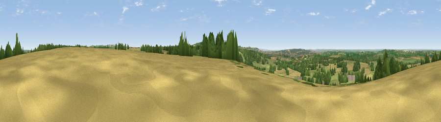

Viewpoint near Compton Bassett
#18394 in England · top 32% of its area beats it · near Compton BassettThe view, rendered

A 360° render of this exact spot computed from the terrain model, tree cover and land cover — summer colours, afternoon light, calibrated against photographs of famous viewpoints. Real trees, hedges and buildings will differ in detail.
The panorama
Grey silhouette: terrain skyline in each direction (720 bearings, Earth curvature and refraction included). Dashed green: skyline with trees (+15 m) and buildings (+8 m) as obstacles. Blue strip: how far the ground is visible on each bearing.
Where the view opens
Wedge length = distance to the farthest visible ground on that bearing (vegetation-aware). Rings at 10, 25 and 50 km.
What fills the view
69% grassland · 16% cropland · 14% woodland · 1% built-up
Angular shares of the visible panorama (visual magnitude), not map area. Landscape diversity 0.38 (0–1 Shannon).
Key numbers
More beautiful places nearby
The staircase of upgrades: each row has a higher view potential than everything closer. Driving times are estimates from straight-line distance, calibrated against real road routing — check an actual route before setting out.
| Place | Direction | Drive | Score |
|---|---|---|---|
| Viewpoint near Compton Bassett | NE · 1 km | ~4 min | 56.4 |
| Viewpoint near Clyffe Pypard | NNE · 2 km | ~5 min | 62.5 |
| Viewpoint near Clyffe Pypard | NNE · 2 km | ~6 min | 63.7 |
| Viewpoint near Cherhill | SSE · 4 km | ~10 min | 71.2 |
| Viewpoint near Cherhill | S · 6 km | ~13 min | 73.6 |
| Morgan's Hill | S · 6 km | ~14 min | 74.3 |
| Viewpoint near Allington | SSE · 10 km | ~19 min | 75.6 |
| Martinsell viewpoint | SE · 17 km | ~29 min | 77.3 |
51.45799, -1.94274 · source: screening · position refined by local search. Computed location — check access rights before visiting.